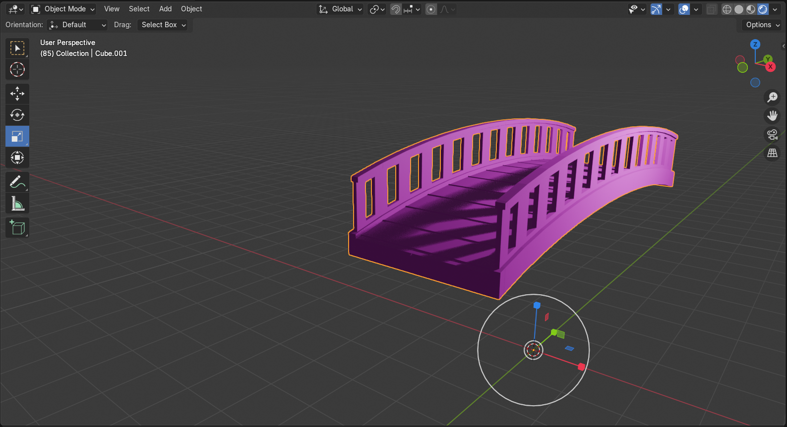
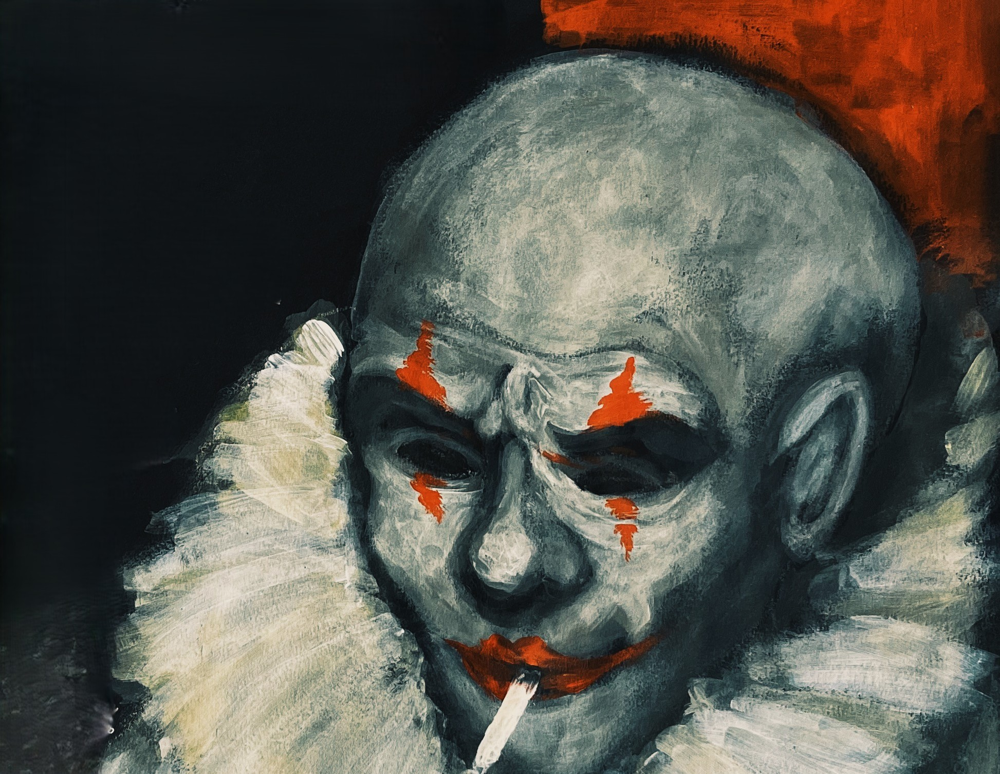

The projects I've covered so far span over my highschool and university years, and include a range of creative pursuits in game design and development to digital art and traditional mediums. These projects represent my growth as a creative and my exploration of different mediums and techniques. Each project has been a learning experience that has helped me develop my skills and refine my artistic vision.

My digital projects consist of my studies in game design and animation thus far, and include a range of projects from 2D and 3D game assets to animation.
view →
My traditional works consist of conceptual and experimental pieces in a range of mediums including painting, drawing, and sculpture.
view →